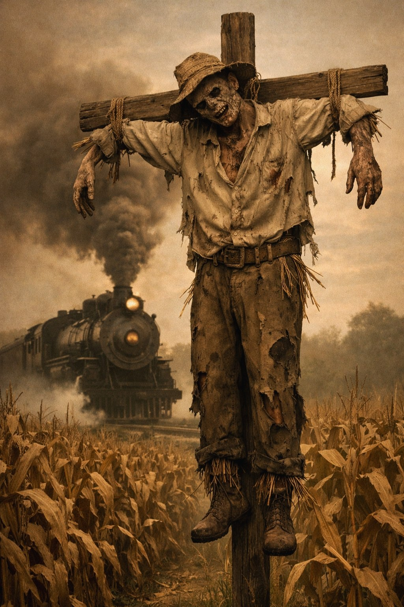
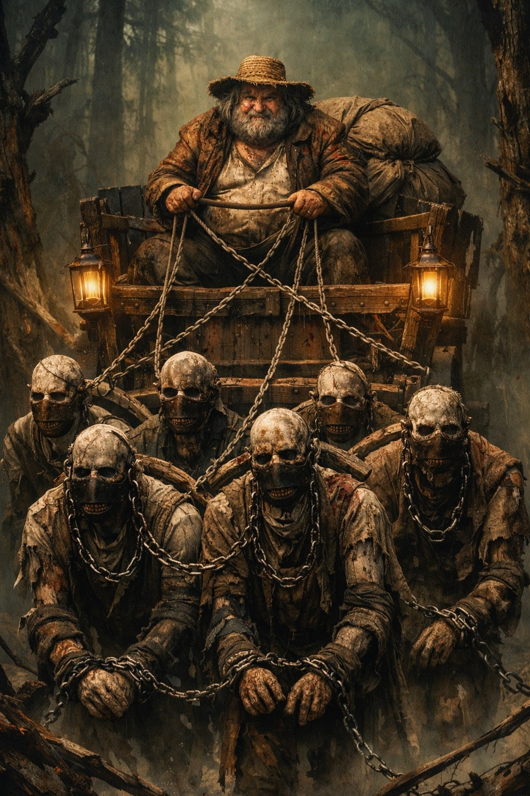
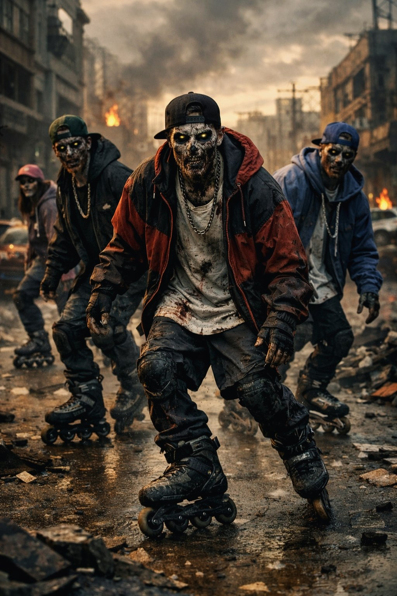
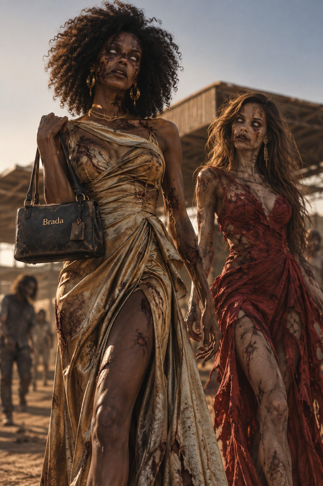
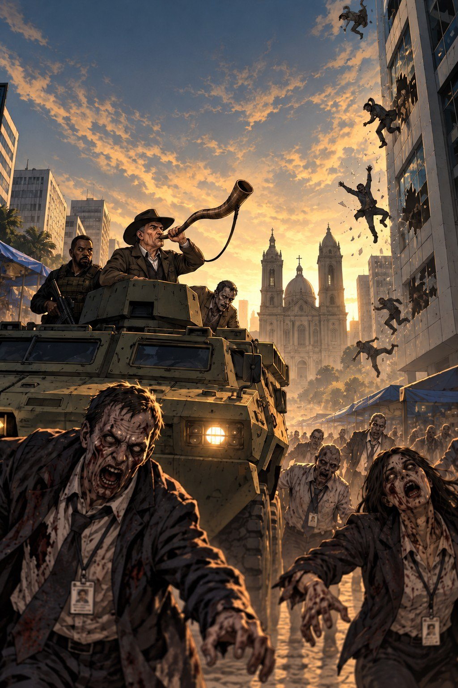

Um romance distópico de C. E. Gomes
Ezequiel e o mundo de Ossos Vivos
Quando Noemi é infectada, Ezequiel atravessa um Brasil dominado pelos ossos-vivos em busca de uma cura — antes que ela deixe de ser humana.
“Uma proposta diferente, que consegue unir fé, Bíblia, aventura e ficção.”
Miguel Sauaia

role para descobrir
01 O livro
“Até onde você iria para salvar a pessoa que ama?”
Em um Brasil pós-apocalíptico, a humanidade sobrevive atrás de muralhas enquanto hordas de ossos-vivos dominam o mundo lá fora.
Quando Noemi é infectada, um antídoto incompleto a transforma em algo único: uma semizumbi presa entre a humanidade e a monstruosidade. Ezequiel se recusa a aceitar que ela está condenada.
Para salvá-la, o jovem médico precisa fugir do regime opressor de Babiorne, atravessar o cerrado e voltar a Yerushalam em busca da cura. A pesquisa deixada por seu pai pode ser a última chance de recuperar Noemi — e talvez toda a humanidade.
GêneroRomanceFicção
cristãDistopia
Você vai encontrar
Ler na Amazon Grátis para assinantes do Kindle Unlimited
Família encontradaJornada de sobrevivênciaAmigos que
se apaixonamProteção da pessoa amadaEsperança em meio ao
caosInfectados e ossos-vivos
Acaso pode um mundo de ossos-vivos voltar a viver? Ezequiel acreditou.
Então ele me disse: ‘Profetize a estes ossos e diga:
Ezequiel 37:4-5
“Ossos secos, ouçam a palavra do SENHOR! Assim diz o SENHOR Soberano: Soprarei meu espírito e os trarei de volta à vida!”’
02 Noemi & Ezequiel
Um amor que enfrenta
o impossível.
Em meio às muralhas, à poeira e ao medo, Ezequiel e Noemi encontram um no outro um lugar de abrigo. O que começa como insistência se transforma em parceria, afeto e uma promessa de continuar juntos — mesmo quando o mundo parece determinado a separá-los.
“O sol estava torando no céu, e as vizinhas fofoqueiras de plantão já estavam penduradas nas varandas.
Foi ali que aconteceu.
No meio da rua mesmo.
Noemi ainda segurava a casquinha de sorvete quando criei coragem e a puxei para perto. Ela tentou protestar, mas acabou sorrindo, porque, no fundo, também queria.
E então nos beijamos pela primeira vez.”
04 A jornada
Uma viagem cheia de aventuras e perigos
Uma busca pela cura
através do caos.
Para salvar Noemi, Ezequiel precisa deixar as muralhas para trás. A estrada pelo cerrado reserva cidades em ruínas, criaturas improváveis e escolhas que testam a coragem de todos — até um rodeio no meio do apocalipse e uma horda de ossos-vivos de patins.




05 Explore o universo
06 Leitores
O que os leitores
estão dizendo.
★★★★★“O autor consegue trazer a história de Ezequiel e o Vale de Ossos Secos para uma perspectiva completamente diferente, misturando a narrativa bíblica com uma ficção envolvente em um mundo tomado por zumbis.”
Miguel Sauaia
★★★★★“Um livro leve e fluido que me prendeu do começo ao fim. Excelentes referências. E os personagens têm um jeitinho brasileiro que todo mundo ama.”
Cliente Kindle
★★★★★“Esse livro fala de esperança em meio às adversidades. É incrível ver referências e personagens bíblicos sendo apresentados de forma literária.”
Cliente Kindle
★★★★★“Um livro dinâmico, de leitura fluida e com personagens cativantes. Ótimo para quem busca uma leitura com base cristã e uma mensagem de esperança em meio ao caos.”
Karen
07 Citações
Palavras que
mantêm a esperança viva.
Ir para as
citações
“Deus deu poder às nossas palavras: o dom de profetizar. O que sai da nossa boca pode transformar quem somos e até o mundo à nossa volta.”
Dr. Buzi
“Um dia você vai voltar aqui e, no lugar de uma multidão paralisada pela morte, vai encontrar um exército de pessoas prontas para lutar.”
Dr. Buzi
“Esse mundo em que vivemos é duro demais. Ele nos esmaga. Mói a gente por dentro. E, cada vez que isso acontece, a gente realmente acredita que não vai conseguir continuar. Que acabou. Mas continuamos. Sempre continuamos. Porque, lá no fundo, ainda acreditamos que pode ser melhor. Somos prisioneiros da esperança.”
Jaconias, Gran-Reitor
Uma história para quem gosta de